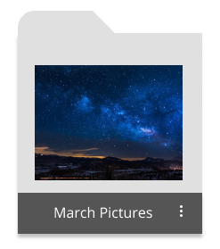
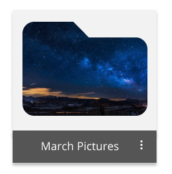
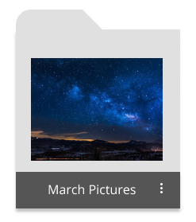
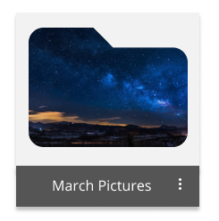
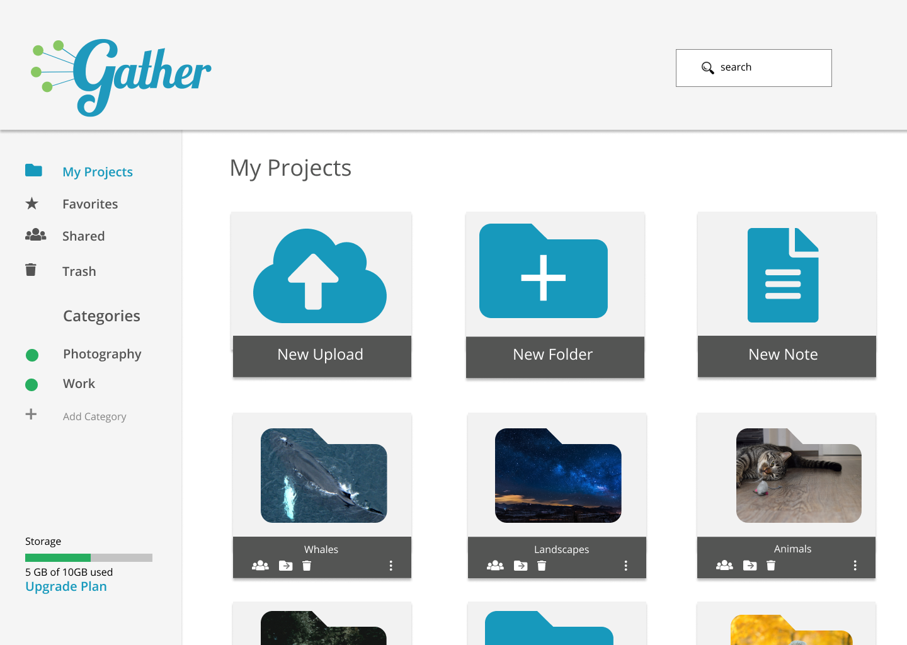
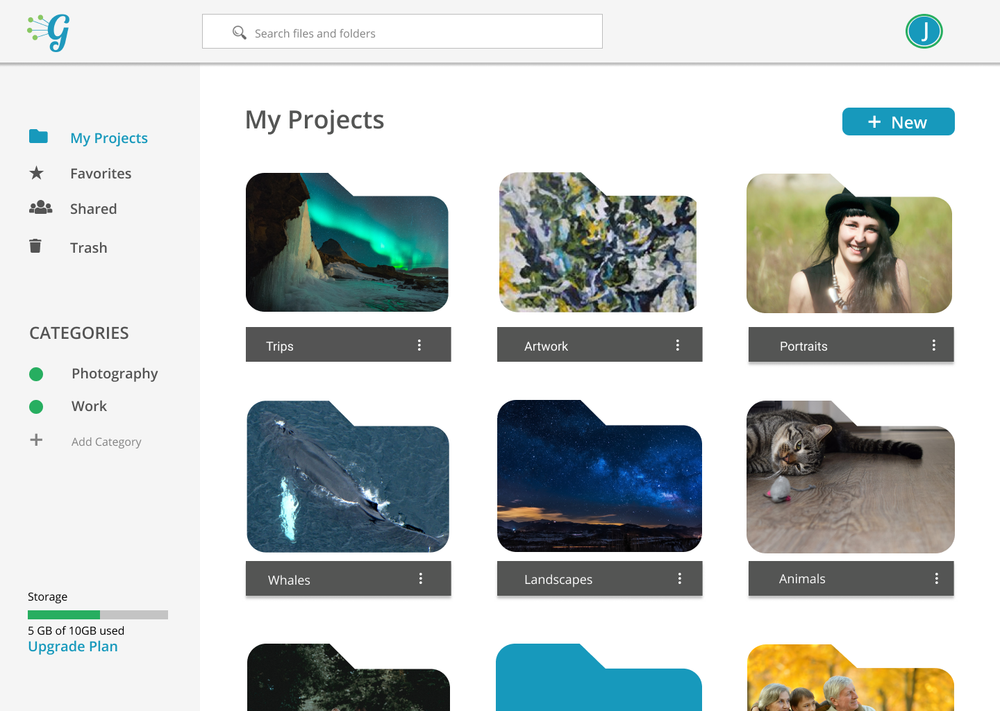

Research
Branding
Visual Design
User Testing
Identity
Low-Fidelity wireframes
User Personas
Logo design
Style Guide
Responsive App Design
Figma
Usability Hub
Illustrator
WordPress
HTML/CSS
A local meteorologist has a great fanbase on social media. He starts getting a lot of messages how people are frustrated with their weather apps, they are riddled with ads and lack a focus on local weather.
A meteorologist in your pocket, personalized and hyper local weather crafted by a local meteorologist. NSWS focuses on local weather and includes current, daily and hourly forecasts a detailed storm center with models and analysis, live ligthning and so much more!
My client felt he had a good idea of what his users were looking for, after years of getting requests for an app and app features. I recommended we still do a survey and put it out to his 8K followers just to get a better idea of where their pain points were, and what features would be great to include in the new app.
use Google Drive for cloud storage
like having all their files in one place
think cloud storage can be disorganized
Out of the 64 responses we got, I noticed that a lot of people use weather apps for their main way to get the weather, but were frustrated with a clunky design filled with information they didn't need yet the apps didn't have the local coverage they are looking for. Users loved the idea of having in depth storm analysis and live lightning, but most weren't interested in marine data. My client disagreed and thought that the survey was missing the many requests he had gotten over the years, and felt that coastal weather was a big focus of the North Shore culture. He decided to keep that information regardless of the user data I collected.


To get an idea of the needs of different users, I developed some user personas. Julie the teacher, needs an easy way to share files with her coworkers and students. Roger needs a collaborative sharing experience for his freelance business. Forgetful Randy is a busy student who doesn't have lots of time to learn a new piece of software and wishes cloud storage wasn't so complicated.

"Don't like the weather? Just wait a minute"
Bud considers himself a North Shore staple, He was here for the blizzard of 78, and all the major hurricanes Nor’Easters and “scorchah summahs”. He understands that weather can make an impact on daily life, and likes to be prepared just in case because his daily routine is very important to him. He takes care of his school-age grandchildren after school when his daughter is working as a nurse. She gets no days off and he finds that the reliable forecasters help him plan if the kid’s school will be closed or not. He also spends a lot of time on his fishing boat in the summer and likes to be kept up to date on the tides. Bud isn’t a big fan of technology and prefers to be working with his hands on real-life projects rather than scrolling through a smartphone and while he as used weather apps in the past he feels they too general and wrong way too often. He needs an app that is suepr easy to use, reliable and from a forecaster with a good local reputation..

"Knowing the weather can help me keep people safe"
An EMT dispatcher by day, combined with an active lifestyle keep Bill busy. Bill doesn't have time to watch meteorologists on TV and relies on weather apps to get the information he needs. He uses the Weather Channel App, and enjoys the push notifications so that he knows how to prepare but find it doesn't provides enough updates on what to expect, especially during storms. Being a dispatcher makes understanding road conditions to be very important and he wishes there was a way to get the scoop with just the click of a button.

"Got to get the bread and milk!"
Evelyn is a Chemistry Teacher in her home town of Marblehead, where she grew up and recently decided to buy her first home at. She loves living by the sea and spends most of her time at the beach no matter the weather or season when she isn’t working. Evelyn loves getting as much information as she can about the weather, and will watch the weather channel and surf social media for the latest updates on the biggest storms. Evelyn occasionally uses the weather apps, but prefers to watch the meteorologists on TV because they have a lot more information on local weather. She would love a one stop shop where she can follow the storm on the go and share her awesome ocean storm shots with fellow weather geeks.
Based on the results from the survey and using my user personas as a base, I went ahead and created some user stories to help prioritize features and define the scope of the project.

I created Low-fidelity wireframes using Invision and tested them with a usability test script for 3 different users. I wanted my tests to feature ease of onboarding, uploading and moving content. While users had an easy experience signing up and uploading, some users showed hesitation while moving content. As I moved towards future iterations, I added some iconography for the move feature.

Before I went on to higher fidelity prototypes, it was time to get a feel for the brand's vision and style. I knew the brand mission centered around bringing together people and content. After lots of brainstorming, the name Gather formed. The community feel of Gather lended itself to a script font. Lobster was a perfect pairing for the vintage togetherness that is at the core of Gather's brand. Open Sans as a supporting text was friendly, airy and easy to read.


Still not sure of a few aspects of my design, I got the help of the public to help me with some final preference tests. I tested a folder design, features page and nav bar design on Usability Hub, with 32 responses here are the results:
 



14%
14%
71%
25%
75%
25%

75%
Our high fidelity prototypes went through many design iterations based on user feedback. During our first round of testing users felt the iconography was hard to read, but when we made it bigger the design looked cluttered. For our next iteration we simplified to a single icon which opened a drop down menu. Many design iterations later, users had a smooth experience uploading and organizing their content on the app.
Sign up was easy to execute and many users were excited about the opportunity to sign up via faceboook, something most testers expressed that was their preferred sign up. On the other hand, users expressed that the main image on the sign up page didn’t connect with the brand message. I also received feedback that for sign up forms, putting the sign in prompts on top of the input fields rather than inside was an even easier user experience. After making those changes users were delighted with a seamless and easy sign up process that left the excited to try the new app.
Before

After

Users thought the design was inviting but wanted more room for content, so Instead of the large buttons at the top I added a smaller button on the side of the page for users to add and upload new content from there, furthermore I shrunk the nav heading and logo while also expanding the search bar. User feedback thought the icons made moving and sharing files easy, but design wise they said it felt tight so I condensed the icons into a small drop down menu so it was still easy to navigate but maintained a clean and easy to use interface
Before
After
Working through Gather helped me gain confidence in the iterative process of design. Creating an app that centered around user content was challenging. After completing many rounds of user feedback and design iterations, I was able to make a cloud storage app with a smooth user experience.